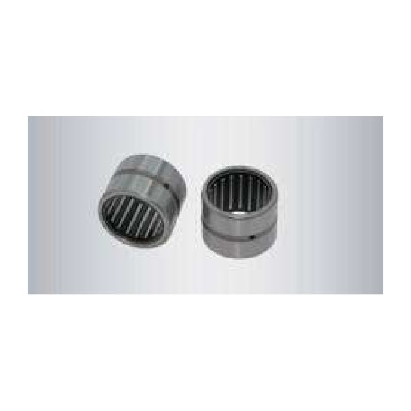

Parts › Bearings & Bushings › TLP-BB002

Available
Email for a quote
TLP-BB002 Needle Roller Bearing
| OEM part number | TLP-BB002 |
| Category | Bearings & Bushings |
| Type | Aftermarket replacement |
Send us the quantity you need and we'll reply with pricing, usually within 24 hours. Not the exact part? We can source it. Send the part number or a photo.